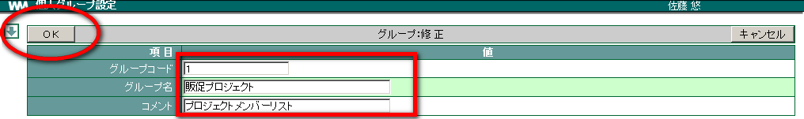
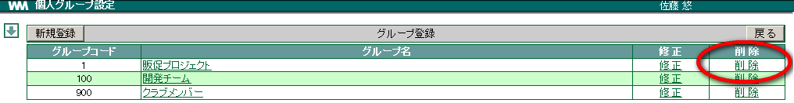
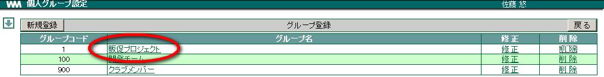
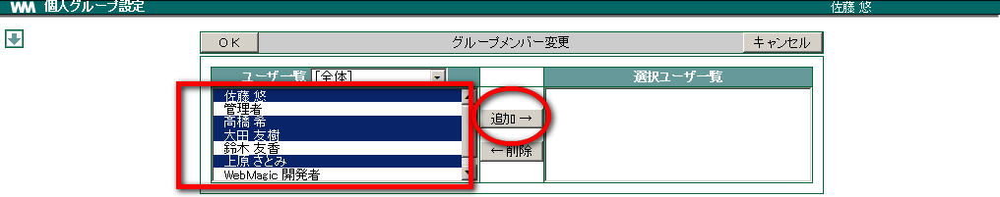

3. グループ¶
［グループ］で設定する「グループ」は、管理者が設定する「部署」のことではなく、個人単位で設定できるユーザーグループのことです。ここで設定したグループは、メールの一括送信に利用したり、グループに所属するメンバーのスケジュールを管理したりできます。
3.1. グループを登録する¶
- メニューの
 をクリックします。
をクリックします。  をクリックします。
をクリックします。- 新規登録 をクリックします。

各項目を入力し、 OK をクリックします。

Note
グループコードには
グループコードには任意の数字を入力します。複数のグループを登録する場合、グループコードが重複しないようにします。また、複数のグループを登録した場合にはグループ名はグループコードが若い順に表示されます。
3.2. グループを修正する¶
メニューの
をクリックします。- をクリックします。
修正したいグループの「修正」をクリックします。

各項目を修正し、 OK をクリックします。

3.3. グループを削除する¶
メニューの
をクリックします。- をクリックします。
削除したいグループの「削除」をクリックします。

確認メッセージが表示されたら、 OK をクリックします。

3.4. グループにユーザーを登録する¶
メニューの
をクリックします。- をクリックします。
ユーザーを登録したいグループのグループ名をクリックします。

「ユーザー一覧」からユーザーを選択し、 追加→ をクリックします。

OK をクリックします。

3.5. グループのユーザーを変更する¶
メニューの
をクリックします。- をクリックします。
ユーザーを変更したいグループのグループ名をクリックします。
追加したい場合、「ユーザー一覧」からユーザーを選択し、 追加→ をクリックします。
削除したい場合、「選択ユーザー一覧」からユーザーを選択し、 ←削除 をクリックします。

OK をクリックします。